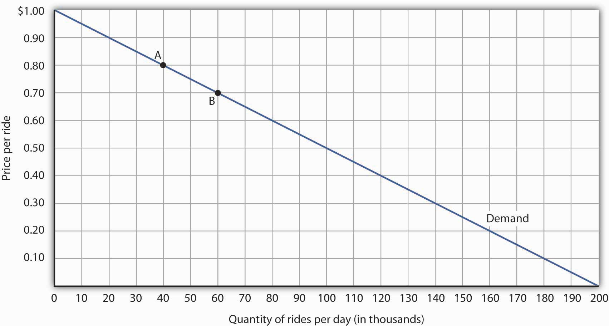
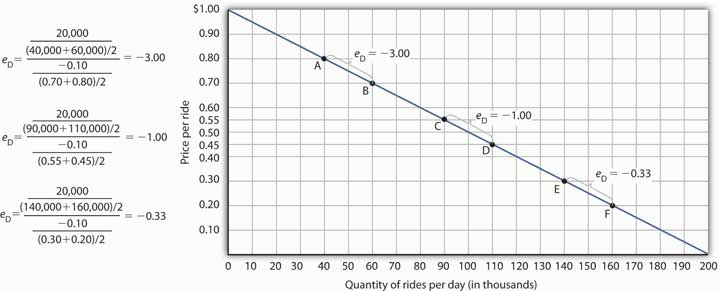
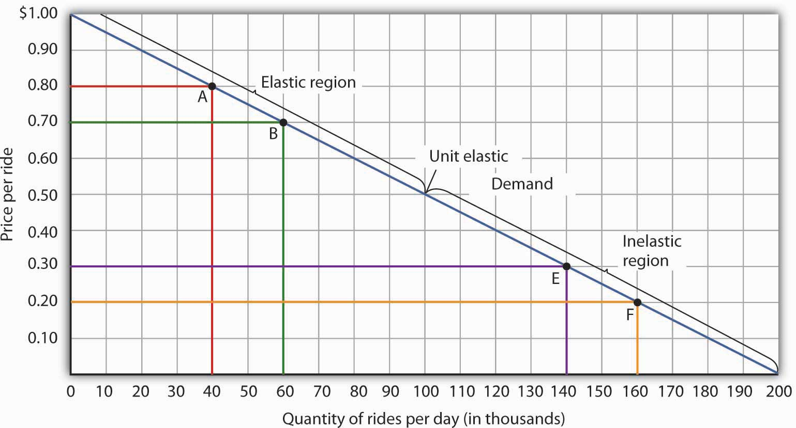
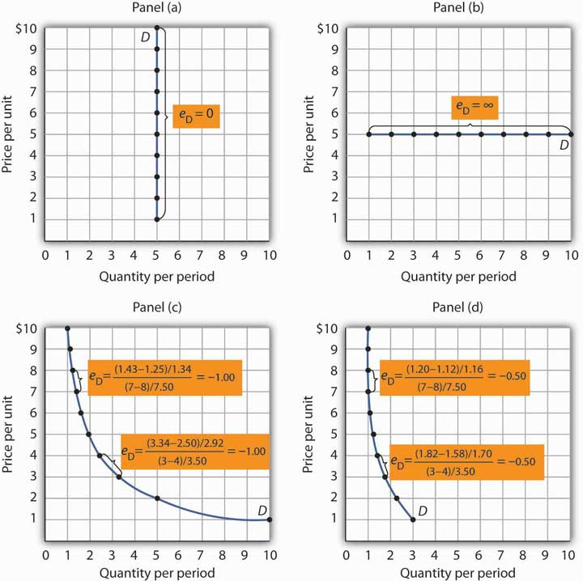

We know from the law of demand how the quantity demanded will respond to a price change: it will change in the opposite direction. But how much will it change? It seems reasonable to expect, for example, that a 10% change in the price charged for a visit to the doctor would yield a different percentage change in quantity demanded than a 10% change in the price of a Ford Mustang. But how much is this difference?
To show how responsive quantity demanded is to a change in price, we apply the concept of elasticity. The price elasticity of demandThe percentage change in quantity demanded of a particular good or service divided by the percentage change in the price of that good or service, all other things unchanged. for a good or service, eD, is the percentage change in quantity demanded of a particular good or service divided by the percentage change in the price of that good or service, all other things unchanged. Thus we can write
Equation 5.1
Because the price elasticity of demand shows the responsiveness of quantity demanded to a price change, assuming that other factors that influence demand are unchanged, it reflects movements along a demand curve. With a downward-sloping demand curve, price and quantity demanded move in opposite directions, so the price elasticity of demand is always negative. A positive percentage change in price implies a negative percentage change in quantity demanded, and vice versa. Sometimes you will see the absolute value of the price elasticity measure reported. In essence, the minus sign is ignored because it is expected that there will be a negative (inverse) relationship between quantity demanded and price. In this text, however, we will retain the minus sign in reporting price elasticity of demand and will say “the absolute value of the price elasticity of demand” when that is what we are describing.
Be careful not to confuse elasticity with slope. The slope of a line is the change in the value of the variable on the vertical axis divided by the change in the value of the variable on the horizontal axis between two points. Elasticity is the ratio of the percentage changes. The slope of a demand curve, for example, is the ratio of the change in price to the change in quantity between two points on the curve. The price elasticity of demand is the ratio of the percentage change in quantity to the percentage change in price. As we will see, when computing elasticity at different points on a linear demand curve, the slope is constant—that is, it does not change—but the value for elasticity will change.
Finding the price elasticity of demand requires that we first compute percentage changes in price and in quantity demanded. We calculate those changes between two points on a demand curve.
Figure 5.1 "Responsiveness and Demand" shows a particular demand curve, a linear demand curve for public transit rides. Suppose the initial price is $0.80, and the quantity demanded is 40,000 rides per day; we are at point A on the curve. Now suppose the price falls to $0.70, and we want to report the responsiveness of the quantity demanded. We see that at the new price, the quantity demanded rises to 60,000 rides per day (point B). To compute the elasticity, we need to compute the percentage changes in price and in quantity demanded between points A and B.
Figure 5.1 Responsiveness and Demand
The demand curve shows how changes in price lead to changes in the quantity demanded. A movement from point A to point B shows that a $0.10 reduction in price increases the number of rides per day by 20,000. A movement from B to A is a $0.10 increase in price, which reduces quantity demanded by 20,000 rides per day.
We measure the percentage change between two points as the change in the variable divided by the average value of the variable between the two points. Thus, the percentage change in quantity between points A and B in Figure 5.1 "Responsiveness and Demand" is computed relative to the average of the quantity values at points A and B: (60,000 + 40,000)/2 = 50,000. The percentage change in quantity, then, is 20,000/50,000, or 40%. Likewise, the percentage change in price between points A and B is based on the average of the two prices: ($0.80 + $0.70)/2 = $0.75, and so we have a percentage change of −0.10/0.75, or −13.33%. The price elasticity of demand between points A and B is thus 40%/(−13.33%) = −3.00.
This measure of elasticity, which is based on percentage changes relative to the average value of each variable between two points, is called arc elasticityMeasure of elasticity based on percentage changes relative to the average value of each variable between two points.. The arc elasticity method has the advantage that it yields the same elasticity whether we go from point A to point B or from point B to point A. It is the method we shall use to compute elasticity.
For the arc elasticity method, we calculate the price elasticity of demand using the average value of price, , and the average value of quantity demanded, . We shall use the Greek letter Δ to mean “change in,” so the change in quantity between two points is ΔQ and the change in price is ΔP. Now we can write the formula for the price elasticity of demand as
Equation 5.2
The price elasticity of demand between points A and B is thus:
With the arc elasticity formula, the elasticity is the same whether we move from point A to point B or from point B to point A. If we start at point B and move to point A, we have:
The arc elasticity method gives us an estimate of elasticity. It gives the value of elasticity at the midpoint over a range of change, such as the movement between points A and B. For a precise computation of elasticity, we would need to consider the response of a dependent variable to an extremely small change in an independent variable. The fact that arc elasticities are approximate suggests an important practical rule in calculating arc elasticities: we should consider only small changes in independent variables. We cannot apply the concept of arc elasticity to large changes.
Another argument for considering only small changes in computing price elasticities of demand will become evident in the next section. We will investigate what happens to price elasticities as we move from one point to another along a linear demand curve.
Notice that in the arc elasticity formula, the method for computing a percentage change differs from the standard method with which you may be familiar. That method measures the percentage change in a variable relative to its original value. For example, using the standard method, when we go from point A to point B, we would compute the percentage change in quantity as 20,000/40,000 = 50%. The percentage change in price would be −$0.10/$0.80 = −12.5%. The price elasticity of demand would then be 50%/(−12.5%) = −4.00. Going from point B to point A, however, would yield a different elasticity. The percentage change in quantity would be −20,000/60,000, or −33.33%. The percentage change in price would be $0.10/$0.70 = 14.29%. The price elasticity of demand would thus be −33.33%/14.29% = −2.33. By using the average quantity and average price to calculate percentage changes, the arc elasticity approach avoids the necessity to specify the direction of the change and, thereby, gives us the same answer whether we go from A to B or from B to A.
What happens to the price elasticity of demand when we travel along the demand curve? The answer depends on the nature of the demand curve itself. On a linear demand curve, such as the one in Figure 5.2 "Price Elasticities of Demand for a Linear Demand Curve", elasticity becomes smaller (in absolute value) as we travel downward and to the right.
Figure 5.2 Price Elasticities of Demand for a Linear Demand Curve
The price elasticity of demand varies between different pairs of points along a linear demand curve. The lower the price and the greater the quantity demanded, the lower the absolute value of the price elasticity of demand.
Figure 5.2 "Price Elasticities of Demand for a Linear Demand Curve" shows the same demand curve we saw in Figure 5.1 "Responsiveness and Demand". We have already calculated the price elasticity of demand between points A and B; it equals −3.00. Notice, however, that when we use the same method to compute the price elasticity of demand between other sets of points, our answer varies. For each of the pairs of points shown, the changes in price and quantity demanded are the same (a $0.10 decrease in price and 20,000 additional rides per day, respectively). But at the high prices and low quantities on the upper part of the demand curve, the percentage change in quantity is relatively large, whereas the percentage change in price is relatively small. The absolute value of the price elasticity of demand is thus relatively large. As we move down the demand curve, equal changes in quantity represent smaller and smaller percentage changes, whereas equal changes in price represent larger and larger percentage changes, and the absolute value of the elasticity measure declines. Between points C and D, for example, the price elasticity of demand is −1.00, and between points E and F the price elasticity of demand is −0.33.
On a linear demand curve, the price elasticity of demand varies depending on the interval over which we are measuring it. For any linear demand curve, the absolute value of the price elasticity of demand will fall as we move down and to the right along the curve.
Suppose the public transit authority is considering raising fares. Will its total revenues go up or down? Total revenueA firm’s output multiplied by the price at which it sells that output. is the price per unit times the number of units sold.Notice that since the number of units sold of a good is the same as the number of units bought, the definition for total revenue could also be used to define total spending. Which term we use depends on the question at hand. If we are trying to determine what happens to revenues of sellers, then we are asking about total revenue. If we are trying to determine how much consumers spend, then we are asking about total spending. In this case, it is the fare times the number of riders. The transit authority will certainly want to know whether a price increase will cause its total revenue to rise or fall. In fact, determining the impact of a price change on total revenue is crucial to the analysis of many problems in economics.
We will do two quick calculations before generalizing the principle involved. Given the demand curve shown in Figure 5.2 "Price Elasticities of Demand for a Linear Demand Curve", we see that at a price of $0.80, the transit authority will sell 40,000 rides per day. Total revenue would be $32,000 per day ($0.80 times 40,000). If the price were lowered by $0.10 to $0.70, quantity demanded would increase to 60,000 rides and total revenue would increase to $42,000 ($0.70 times 60,000). The reduction in fare increases total revenue. However, if the initial price had been $0.30 and the transit authority reduced it by $0.10 to $0.20, total revenue would decrease from $42,000 ($0.30 times 140,000) to $32,000 ($0.20 times 160,000). So it appears that the impact of a price change on total revenue depends on the initial price and, by implication, the original elasticity. We generalize this point in the remainder of this section.
The problem in assessing the impact of a price change on total revenue of a good or service is that a change in price always changes the quantity demanded in the opposite direction. An increase in price reduces the quantity demanded, and a reduction in price increases the quantity demanded. The question is how much. Because total revenue is found by multiplying the price per unit times the quantity demanded, it is not clear whether a change in price will cause total revenue to rise or fall.
We have already made this point in the context of the transit authority. Consider the following three examples of price increases for gasoline, pizza, and diet cola.
Suppose that 1,000 gallons of gasoline per day are demanded at a price of $4.00 per gallon. Total revenue for gasoline thus equals $4,000 per day (=1,000 gallons per day times $4.00 per gallon). If an increase in the price of gasoline to $4.25 reduces the quantity demanded to 950 gallons per day, total revenue rises to $4,037.50 per day (=950 gallons per day times $4.25 per gallon). Even though people consume less gasoline at $4.25 than at $4.00, total revenue rises because the higher price more than makes up for the drop in consumption.
Next consider pizza. Suppose 1,000 pizzas per week are demanded at a price of $9 per pizza. Total revenue for pizza equals $9,000 per week (=1,000 pizzas per week times $9 per pizza). If an increase in the price of pizza to $10 per pizza reduces quantity demanded to 900 pizzas per week, total revenue will still be $9,000 per week (=900 pizzas per week times $10 per pizza). Again, when price goes up, consumers buy less, but this time there is no change in total revenue.
Now consider diet cola. Suppose 1,000 cans of diet cola per day are demanded at a price of $0.50 per can. Total revenue for diet cola equals $500 per day (=1,000 cans per day times $0.50 per can). If an increase in the price of diet cola to $0.55 per can reduces quantity demanded to 880 cans per month, total revenue for diet cola falls to $484 per day (=880 cans per day times $0.55 per can). As in the case of gasoline, people will buy less diet cola when the price rises from $0.50 to $0.55, but in this example total revenue drops.
In our first example, an increase in price increased total revenue. In the second, a price increase left total revenue unchanged. In the third example, the price rise reduced total revenue. Is there a way to predict how a price change will affect total revenue? There is; the effect depends on the price elasticity of demand.
To determine how a price change will affect total revenue, economists place price elasticities of demand in three categories, based on their absolute value. If the absolute value of the price elasticity of demand is greater than 1, demand is termed price elasticSituation in which the absolute value of the price elasticity of demand is greater than 1.. If it is equal to 1, demand is unit price elasticSituation in which the absolute value of the price elasticity of demand is equal to 1.. And if it is less than 1, demand is price inelasticSituation in which the absolute value of the price of elasticity of demand is less than 1..
When the price of a good or service changes, the quantity demanded changes in the opposite direction. Total revenue will move in the direction of the variable that changes by the larger percentage. If the variables move by the same percentage, total revenue stays the same. If quantity demanded changes by a larger percentage than price (i.e., if demand is price elastic), total revenue will change in the direction of the quantity change. If price changes by a larger percentage than quantity demanded (i.e., if demand is price inelastic), total revenue will move in the direction of the price change. If price and quantity demanded change by the same percentage (i.e., if demand is unit price elastic), then total revenue does not change.
When demand is price inelastic, a given percentage change in price results in a smaller percentage change in quantity demanded. That implies that total revenue will move in the direction of the price change: a reduction in price will reduce total revenue, and an increase in price will increase it.
Consider the price elasticity of demand for gasoline. In the example above, 1,000 gallons of gasoline were purchased each day at a price of $4.00 per gallon; an increase in price to $4.25 per gallon reduced the quantity demanded to 950 gallons per day. We thus had an average quantity of 975 gallons per day and an average price of $4.125. We can thus calculate the arc price elasticity of demand for gasoline:
The demand for gasoline is price inelastic, and total revenue moves in the direction of the price change. When price rises, total revenue rises. Recall that in our example above, total spending on gasoline (which equals total revenues to sellers) rose from $4,000 per day (=1,000 gallons per day times $4.00) to $4037.50 per day (=950 gallons per day times $4.25 per gallon).
When demand is price inelastic, a given percentage change in price results in a smaller percentage change in quantity demanded. That implies that total revenue will move in the direction of the price change: an increase in price will increase total revenue, and a reduction in price will reduce it.
Consider again the example of pizza that we examined above. At a price of $9 per pizza, 1,000 pizzas per week were demanded. Total revenue was $9,000 per week (=1,000 pizzas per week times $9 per pizza). When the price rose to $10, the quantity demanded fell to 900 pizzas per week. Total revenue remained $9,000 per week (=900 pizzas per week times $10 per pizza). Again, we have an average quantity of 950 pizzas per week and an average price of $9.50. Using the arc elasticity method, we can compute:
Demand is unit price elastic, and total revenue remains unchanged. Quantity demanded falls by the same percentage by which price increases.
Consider next the example of diet cola demand. At a price of $0.50 per can, 1,000 cans of diet cola were purchased each day. Total revenue was thus $500 per day (=$0.50 per can times 1,000 cans per day). An increase in price to $0.55 reduced the quantity demanded to 880 cans per day. We thus have an average quantity of 940 cans per day and an average price of $0.525 per can. Computing the price elasticity of demand for diet cola in this example, we have:
The demand for diet cola is price elastic, so total revenue moves in the direction of the quantity change. It falls from $500 per day before the price increase to $484 per day after the price increase.
A demand curve can also be used to show changes in total revenue. Figure 5.3 "Changes in Total Revenue and a Linear Demand Curve" shows the demand curve from Figure 5.1 "Responsiveness and Demand" and Figure 5.2 "Price Elasticities of Demand for a Linear Demand Curve". At point A, total revenue from public transit rides is given by the area of a rectangle drawn with point A in the upper right-hand corner and the origin in the lower left-hand corner. The height of the rectangle is price; its width is quantity. We have already seen that total revenue at point A is $32,000 ($0.80 × 40,000). When we reduce the price and move to point B, the rectangle showing total revenue becomes shorter and wider. Notice that the area gained in moving to the rectangle at B is greater than the area lost; total revenue rises to $42,000 ($0.70 × 60,000). Recall from Figure 5.2 "Price Elasticities of Demand for a Linear Demand Curve" that demand is elastic between points A and B. In general, demand is elastic in the upper half of any linear demand curve, so total revenue moves in the direction of the quantity change.
Figure 5.3 Changes in Total Revenue and a Linear Demand Curve
Moving from point A to point B implies a reduction in price and an increase in the quantity demanded. Demand is elastic between these two points. Total revenue, shown by the areas of the rectangles drawn from points A and B to the origin, rises. When we move from point E to point F, which is in the inelastic region of the demand curve, total revenue falls.
A movement from point E to point F also shows a reduction in price and an increase in quantity demanded. This time, however, we are in an inelastic region of the demand curve. Total revenue now moves in the direction of the price change—it falls. Notice that the rectangle drawn from point F is smaller in area than the rectangle drawn from point E, once again confirming our earlier calculation.
We have noted that a linear demand curve is more elastic where prices are relatively high and quantities relatively low and less elastic where prices are relatively low and quantities relatively high. We can be even more specific. For any linear demand curve, demand will be price elastic in the upper half of the curve and price inelastic in its lower half. At the midpoint of a linear demand curve, demand is unit price elastic.
Figure 5.4 "Demand Curves with Constant Price Elasticities" shows four demand curves over which price elasticity of demand is the same at all points. The demand curve in Panel (a) is vertical. This means that price changes have no effect on quantity demanded. The numerator of the formula given in Equation 5.1 for the price elasticity of demand (percentage change in quantity demanded) is zero. The price elasticity of demand in this case is therefore zero, and the demand curve is said to be perfectly inelasticSituation in which the price elasticity of demand is zero.. This is a theoretically extreme case, and no good that has been studied empirically exactly fits it. A good that comes close, at least over a specific price range, is insulin. A diabetic will not consume more insulin as its price falls but, over some price range, will consume the amount needed to control the disease.
Figure 5.4 Demand Curves with Constant Price Elasticities
The demand curve in Panel (a) is perfectly inelastic. The demand curve in Panel (b) is perfectly elastic. Price elasticity of demand is −1.00 all along the demand curve in Panel (c), whereas it is −0.50 all along the demand curve in Panel (d).
As illustrated in Figure 5.4 "Demand Curves with Constant Price Elasticities", several other types of demand curves have the same elasticity at every point on them. The demand curve in Panel (b) is horizontal. This means that even the smallest price changes have enormous effects on quantity demanded. The denominator of the formula given in Equation 5.1 for the price elasticity of demand (percentage change in price) approaches zero. The price elasticity of demand in this case is therefore infinite, and the demand curve is said to be perfectly elasticSituation in which the price elasticity of demand is infinite..Division by zero results in an undefined solution. Saying that the price elasticity of demand is infinite requires that we say the denominator “approaches” zero. This is the type of demand curve faced by producers of standardized products such as wheat. If the wheat of other farms is selling at $4 per bushel, a typical farm can sell as much wheat as it wants to at $4 but nothing at a higher price and would have no reason to offer its wheat at a lower price.
The nonlinear demand curves in Panels (c) and (d) have price elasticities of demand that are negative; but, unlike the linear demand curve discussed above, the value of the price elasticity is constant all along each demand curve. The demand curve in Panel (c) has price elasticity of demand equal to −1.00 throughout its range; in Panel (d) the price elasticity of demand is equal to −0.50 throughout its range. Empirical estimates of demand often show curves like those in Panels (c) and (d) that have the same elasticity at every point on the curve.
Do not confuse price inelastic demand and perfectly inelastic demand. Perfectly inelastic demand means that the change in quantity is zero for any percentage change in price; the demand curve in this case is vertical. Price inelastic demand means only that the percentage change in quantity is less than the percentage change in price, not that the change in quantity is zero. With price inelastic (as opposed to perfectly inelastic) demand, the demand curve itself is still downward sloping.
The greater the absolute value of the price elasticity of demand, the greater the responsiveness of quantity demanded to a price change. What determines whether demand is more or less price elastic? The most important determinants of the price elasticity of demand for a good or service are the availability of substitutes, the importance of the item in household budgets, and time.
The price elasticity of demand for a good or service will be greater in absolute value if many close substitutes are available for it. If there are lots of substitutes for a particular good or service, then it is easy for consumers to switch to those substitutes when there is a price increase for that good or service. Suppose, for example, that the price of Ford automobiles goes up. There are many close substitutes for Fords—Chevrolets, Chryslers, Toyotas, and so on. The availability of close substitutes tends to make the demand for Fords more price elastic.
If a good has no close substitutes, its demand is likely to be somewhat less price elastic. There are no close substitutes for gasoline, for example. The price elasticity of demand for gasoline in the intermediate term of, say, three–nine months is generally estimated to be about −0.5. Since the absolute value of price elasticity is less than 1, it is price inelastic. We would expect, though, that the demand for a particular brand of gasoline will be much more price elastic than the demand for gasoline in general.
One reason price changes affect quantity demanded is that they change how much a consumer can buy; a change in the price of a good or service affects the purchasing power of a consumer’s income and thus affects the amount of a good the consumer will buy. This effect is stronger when a good or service is important in a typical household’s budget.
A change in the price of jeans, for example, is probably more important in your budget than a change in the price of pencils. Suppose the prices of both were to double. You had planned to buy four pairs of jeans this year, but now you might decide to make do with two new pairs. A change in pencil prices, in contrast, might lead to very little reduction in quantity demanded simply because pencils are not likely to loom large in household budgets. The greater the importance of an item in household budgets, the greater the absolute value of the price elasticity of demand is likely to be.
Suppose the price of electricity rises tomorrow morning. What will happen to the quantity demanded?
The answer depends in large part on how much time we allow for a response. If we are interested in the reduction in quantity demanded by tomorrow afternoon, we can expect that the response will be very small. But if we give consumers a year to respond to the price change, we can expect the response to be much greater. We expect that the absolute value of the price elasticity of demand will be greater when more time is allowed for consumer responses.
Consider the price elasticity of crude oil demand. Economist John C. B. Cooper estimated short- and long-run price elasticities of demand for crude oil for 23 industrialized nations for the period 1971–2000. Professor Cooper found that for virtually every country, the price elasticities were negative, and the long-run price elasticities were generally much greater (in absolute value) than were the short-run price elasticities. His results are reported in Table 5.1 "Short- and Long-Run Price Elasticities of the Demand for Crude Oil in 23 Countries". As you can see, the research was reported in a journal published by OPEC (Organization of Petroleum Exporting Countries), an organization whose members have profited greatly from the inelasticity of demand for their product. By restricting supply, OPEC, which produces about 45% of the world’s crude oil, is able to put upward pressure on the price of crude. That increases OPEC’s (and all other oil producers’) total revenues and reduces total costs.
Table 5.1 Short- and Long-Run Price Elasticities of the Demand for Crude Oil in 23 Countries
| Country | Short-Run Price Elasticity of Demand | Long-Run Price Elasticity of Demand |
|---|---|---|
| Australia | −0.034 | −0.068 |
| Austria | −0.059 | −0.092 |
| Canada | −0.041 | −0.352 |
| China | 0.001 | 0.005 |
| Denmark | −0.026 | −0.191 |
| Finland | −0.016 | −0.033 |
| France | −0.069 | −0.568 |
| Germany | −0.024 | −0.279 |
| Greece | −0.055 | −0.126 |
| Iceland | −0.109 | −0.452 |
| Ireland | −0.082 | −0.196 |
| Italy | −0.035 | −0.208 |
| Japan | −0.071 | −0.357 |
| Korea | −0.094 | −0.178 |
| Netherlands | −0.057 | −0.244 |
| New Zealand | −0.054 | −0.326 |
| Norway | −0.026 | −0.036 |
| Portugal | 0.023 | 0.038 |
| Spain | −0.087 | −0.146 |
| Sweden | −0.043 | −0.289 |
| Switzerland | −0.030 | −0.056 |
| United Kingdom | −0.068 | −0.182 |
| United States | −0.061 | −0.453 |
For most countries, price elasticity of demand for crude oil tends to be greater (in absolute value) in the long run than in the short run.
Source: John C. B. Cooper, “Price Elasticity of Demand for Crude Oil: Estimates from 23 Countries,” OPEC Review: Energy Economics & Related Issues 27:1 (March 2003): 4. The estimates are based on data for the period 1971–2000, except for China and South Korea, where the period is 1979–2000. While the price elasticities for China and Portugal were positive, they were not statistically significant.
You are now ready to play the part of the manager of the public transit system. Your finance officer has just advised you that the system faces a deficit. Your board does not want you to cut service, which means that you cannot cut costs. Your only hope is to increase revenue. Would a fare increase boost revenue?
You consult the economist on your staff who has researched studies on public transportation elasticities. She reports that the estimated price elasticity of demand for the first few months after a price change is about −0.3, but that after several years, it will be about −1.5.
We all face the situation every day. You are approaching an intersection. The yellow light comes on. You know that you are supposed to slow down, but you are in a bit of a hurry. So, you speed up a little to try to make the light. But the red light flashes on just before you get to the intersection. Should you risk it and go through?
Many people faced with that situation take the risky choice. In 1998, 2,000 people in the United States died as a result of drivers running red lights at intersections. In an effort to reduce the number of drivers who make such choices, many areas have installed cameras at intersections. Drivers who run red lights have their pictures taken and receive citations in the mail. This enforcement method, together with recent increases in the fines for driving through red lights at intersections, has led to an intriguing application of the concept of elasticity. Economists Avner Bar-Ilan of the University of Haifa in Israel and Bruce Sacerdote of Dartmouth University have estimated what is, in effect, the price elasticity for driving through stoplights with respect to traffic fines at intersections in Israel and in San Francisco.
In December 1996, Israel sharply increased the fine for driving through a red light. The old fine of 400 shekels (this was equal at that time to $122 in the United States) was increased to 1,000 shekels ($305). In January 1998, California raised its fine for the offense from $104 to $271. The country of Israel and the city of San Francisco installed cameras at several intersections. Drivers who ignored stoplights got their pictures taken and automatically received citations imposing the new higher fines.
We can think of driving through red lights as an activity for which there is a demand—after all, ignoring a red light speeds up one’s trip. It may also generate satisfaction to people who enjoy disobeying traffic laws. The concept of elasticity gives us a way to show just how responsive drivers were to the increase in fines.
Professors Bar-Ilan and Sacerdote obtained information on all the drivers cited at 73 intersections in Israel and eight intersections in San Francisco. For Israel, for example, they defined the period January 1992 to June 1996 as the “before” period. They compared the number of violations during the before period to the number of violations from July 1996 to December 1999—the “after” period—and found there was a reduction in tickets per driver of 31.5 per cent. Specifically, the average number of tickets per driver was 0.073 during the period before the increase; it fell to 0.050 after the increase. The increase in the fine was 150 per cent. (Note that, because they were making a “before” and “after” calculation, the authors used the standard method described in the Heads Up! on computing a percentage change—i.e., they computed the percentage changes in comparison to the original values instead of the average value of the variables.) The elasticity of citations with respect to the fine was thus −0.21 (= −31.5%/150%).
The economists estimated elasticities for particular groups of people. For example, young people (age 17–30) had an elasticity of −0.36; people over the age of 30 had an elasticity of −0.16. In general, elasticities fell in absolute value as income rose. For San Francisco and Israel combined, the elasticity was between −0.26 and −0.33.
In general, the results showed that people responded rationally to the increases in fines. Increasing the price of a particular behavior reduced the frequency of that behavior. The study also points out the effectiveness of cameras as an enforcement technique. With cameras, violators can be certain they will be cited if they ignore a red light. And reducing the number of people running red lights clearly saves lives.
Source: Avner Bar-Ilan and Bruce Sacerdote. “The Response of Criminals and Non-Criminals to Fines.” Journal of Law and Economics, 47:1 (April 2004): 1–17.